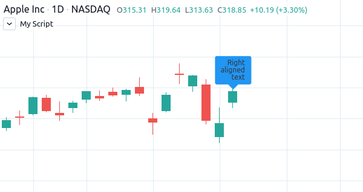
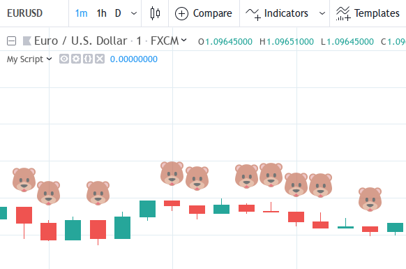

Release notes¶
This page contains release notes of notable changes in Pine Script®.
2023¶
August 2023¶
Added the following alert placeholders:
{{syminfo.currency}}- Returns the currency code of the current symbol (“EUR”, “USD”, etc.).{{syminfo.basecurrency}}- Returns the base currency code of the current symbol if the symbol refers to a currency pair. Otherwise, it returnsna. For example, it returns “EUR” when the symbol is “EURUSD”.
Pine Script® Maps¶
Maps are collections that hold elements in the form of key-value pairs. They associate unique keys of a fundamental type with values of a built-in or user-defined type. Unlike arrays and matrices, these collections are unordered and do not utilize an internal lookup index. Instead, scripts access the values of maps by referencing the keys from the key-value pairs put into them. For more information on these new collections, see our User Manual’s page on Maps.
July 2023¶
Fixed an issue that caused strategies to occasionally calculate the sizes of limit orders incorrectly due to improper tick rounding of the limit price.
Added a new built-in variable to the strategy.* namespace:
- strategy.margin_liquidation_price - When a strategy uses margin, returns the price value after which a margin call will occur.
June 2023¶
New syminfo.* built-in variables were added:
- syminfo.sector - Returns the sector of the symbol.
- syminfo.industry - Returns the industry of the symbol.
- syminfo.country - Returns the two-letter code of the country where the symbol is traded.
May 2023¶
New parameter added to the strategy.entry(), strategy.order(), strategy.close(), strategy.close_all(), and strategy.exit() functions:
disable_alert- Disables order fill alerts for any orders placed by the function.
Our “Indicator on indicator” feature, which allows a script to pass another indicator’s plot as a source value via the input.source() function, now supports multiple external inputs. Scripts can use a multitude of external inputs originating from up to 10 different indicators.
We’ve added the following array functions:
- array.every() - Returns
trueif all elements of theidarray aretrue,falseotherwise. - array.some() - Returns
trueif at least one element of theidarray istrue,falseotherwise.
These functions also work with arrays of int
and float types, in which case zero values
are considered false, and all others true.
April 2023¶
Fixed an issue with trailing stops in strategy.exit() being filled on high/low prices rather than on intrabar prices.
Fixed behavior of array.mode(), matrix.mode() and ta.mode(). Now these functions will return the smallest value when the data has no most frequent value.
March 2023¶
It is now possible to use seconds-based timeframe strings for the timeframe parameter in
request.security()
and request.security_lower_tf().
A new function was added:
- request.currency_rate() - provides a daily rate to convert a value expressed in the
fromcurrency to another in thetocurrency.
February 2023¶
Pine Script® Methods¶
Pine Script® methods are specialized functions associated with specific instances of built-in or user-defined types. They offer a more convenient syntax than standard functions, as users can access methods in the same way as object fields using the handy dot notation syntax. Pine Script® includes built-in methods for array, matrix, line, linefill, label, box, and table types and facilitates user-defined methods with the new method keyword. For more details on this new feature, see our User Manual’s page on methods.
January 2023¶
New array functions were added:
- array.first() - Returns the array’s first element.
- array.last() - Returns the array’s last element.
2022¶
December 2022¶
Pine Objects¶
Pine objects are instantiations of the new user-defined composite types (UDTs) declared using the type keyword. Experienced programmers can think of UDTs as method-less classes. They allow users to create custom types that organize different values under one logical entity. A detailed rundown of the new functionality can be found in our User Manual’s page on objects.
A new function was added:
- ticker.standard() - Creates a ticker to request data from a standard chart that is unaffected by modifiers like extended session, dividend adjustment, currency conversion, and the calculations of non-standard chart types: Heikin Ashi, Renko, etc.
New strategy.* functions were added:
- strategy.opentrades.entry_comment() - The function returns the comment message of the open trade’s entry.
- strategy.closedtrades.entry_comment() - The function returns the comment message of the closed trade’s entry.
- strategy.closedtrades.exit_comment() - The function returns the comment message of the closed trade’s exit.
November 2022¶
Fixed behaviour of math.round_to_mintick() function. For ‘na’ values it returns ‘na’.
October 2022¶
Pine Script® now has a new, more powerful and better-integrated editor. Read our blog to find out everything to know about all the new features and upgrades.
New overload for the fill() function was added. Now it can create vertical gradients. More info about it in the blog post.
A new function was added:
- str.format_time() - Converts a timestamp to a formatted string using the specified format and time zone.
September 2022¶
The text_font_family parameter now allows the selection of a monospace font in label.new(), box.new() and table.cell() function calls, which makes it easier to align text vertically. Its arguments can be:
- font.family_default - Specifies the default font.
- font.family_monospace - Specifies a monospace font.
The accompanying setter functions are:
- label.set_text_font_family() - The function sets the font family of the text inside the label.
- box.set_text_font_family() - The function sets the font family of the text inside the box.
- table.cell_set_text_font_family() - The function sets the font family of the text inside the cell.
August 2022¶
A new label style label.style_text_outline was added.
A new parameter for the ta.pivot_point_levels() function was added:
developing- Iffalse, the values are those calculated the last time the anchor condition was true. They remain constant until the anchor condition becomes true again. Iftrue, the pivots are developing, i.e., they constantly recalculate on the data developing between the point of the last anchor (or bar zero if the anchor condition was never true) and the current bar. Cannot betruewhentypeis set to"Woodie".
A new parameter for the box.new() function was added:
text_wrap- It defines whether the text is presented in a single line, extending past the width of the box if necessary, or wrapped so every line is no wider than the box itself.
This parameter supports two arguments:
- text.wrap_none - Disabled wrapping mode for box.new and box.set_text_wrap functions.
- text.wrap_auto - Automatic wrapping mode for box.new and box.set_text_wrap functions.
New built-in functions were added:
- ta.min() - Returns the all-time low value of
sourcefrom the beginning of the chart up to the current bar. - ta.max() - Returns the all-time high value of
sourcefrom the beginning of the chart up to the current bar.
A new annotation //@strategy_alert_message was added. If the annotation is added to the strategy, the text written after it will be automatically set as the default alert message in the Create Alert window.
//@version=5
// @strategy_alert_message My Default Alert Message
strategy("My Strategy")
plot(close)
July 2022¶
It is now possible to fine-tune where a script’s plot values are displayed through the introduction of
new arguments for the display parameter of the
plot(),
plotchar(),
plotshape(),
plotarrow(),
plotcandle(), and
plotbar() functions.
Four new arguments were added, complementing the previously available display.all and display.none:
- display.data_window displays the plot values in the Data Window, one of the items available from the chart’s right sidebar.
- display.pane
displays the plot in the pane where the script resides, as defined in with the
overlayparameter of the script’s indicator(), strategy(), or library() declaration statement. - display.price_scale controls the display of the plot’s label and price in the price scale, if the chart’s settings allow them.
- display.status_line displays the plot values in the script’s status line, next to the script’s name on the chart, if the chart’s settings allow them.
The display parameter supports the addition and subtraction of its arguments:
display.all - display.status_linewill display the plot’s information everywhere except in the script’s status line.display.price_scale + display.status_linewill display the plot in the price scale and status line only.
June 2022¶
The behavior of the argument used with the qty_percent parameter of strategy.exit() has changed. Previously, the percentages used on successive exit orders of the same position were calculated from the remaining position at any given time. Instead, the percentages now always apply to the initial position size. When executing the following strategy, for example:
//@version=5
strategy("strategy.exit() example", overlay = true)
strategy.entry("Long", strategy.long, qty = 100)
strategy.exit("Exit Long1", "Long", trail_points = 50, trail_offset = 0, qty_percent = 20)
strategy.exit("Exit Long2", "Long", trail_points = 100, trail_offset = 0, qty_percent = 20)
20% of the initial position will be closed on each strategy.exit() call. Before, the first call would exit 20% of the initial position, and the second would exit 20% of the remaining 80% of the position, so only 16% of the initial position.
Two new parameters for the built-in ta.vwap() function were added:
anchor- Specifies the condition that triggers the reset of VWAP calculations. Whentrue, calculations reset; whenfalse, calculations proceed using the values accumulated since the previous reset.stdev_mult- If specified, the ta.vwap() calculates the standard deviation bands based on the main VWAP series and returns a[vwap, upper_band, lower_band]tuple.
New overloaded versions of the strategy.close() and strategy.close_all() functions with the immediately parameter. When immediately is set to true, the closing order will be executed on the tick where it has been placed, ignoring the strategy parameters that restrict the order execution to the open of the next bar.
New built-in functions were added:
- timeframe.change() - Returns
trueon the first bar of a newtimeframe,falseotherwise. - ta.pivot_point_levels() - Returns a float array with numerical values representing 11 pivot point levels:
[P, R1, S1, R2, S2, R3, S3, R4, S4, R5, S5]. Levels absent from the specifiedtypereturn na values.
New built-in variables were added:
- session.isfirstbar - returns
trueif the current bar is the first bar of the day’s session,falseotherwise. - session.islastbar - returns
trueif the current bar is the last bar of the day’s session,falseotherwise. - session.isfirstbar_regular - returns
trueon the first regular session bar of the day,falseotherwise. - session.islastbar_regular - returns
trueon the last regular session bar of the day,falseotherwise. - chart.left_visible_bar_time - returns the
timeof the leftmost bar currently visible on the chart. - chart.right_visible_bar_time - returns the
timeof the rightmost bar currently visible on the chart.
May 2022¶
Matrix support has been added to the request.security() function.
The historical states of arrays and matrices can now be referenced with the [] operator. In the example below, we reference the historic state of a matrix 10 bars ago:
//@version=5
indicator("matrix.new<float> example")
m = matrix.new<float>(1, 1, close)
float x = na
if bar_index > 10
x := matrix.get(m[10], 0, 0)
plot(x)
plot(close)
The ta.change() function now can take values of int and bool types as its source parameter and return the difference in the respective type.
New built-in variables were added:
- chart.bg_color - Returns the color of the chart’s background from the
"Chart settings/Appearance/Background"field. - chart.fg_color - Returns a color providing optimal contrast with chart.bg_color.
- chart.is_standard - Returns true if the chart type is bars, candles, hollow candles, line, area or baseline, false otherwise.
- currency.USDT - A constant for the Tether currency code.
New functions were added:
- syminfo.prefix() - returns the exchange prefix of the
symbolpassed to it, e.g. “NASDAQ” for “NASDAQ:AAPL”. - syminfo.ticker() - returns the ticker of the
symbolpassed to it without the exchange prefix, e.g. “AAPL” for “NASDAQ:AAPL”. - request.security_lower_tf() - requests data from a lower timeframe than the chart’s.
Added use_bar_magnifier parameter for the strategy() function. When true, the Broker Emulator uses lower timeframe data during history backtesting to achieve more realistic results.
Fixed behaviour of strategy.exit() function when stop loss triggered at prices outside the bars price range.
Added new comment and alert message parameters for the strategy.exit() function:
comment_profit- additional notes on the order if the exit was triggered by crossingprofitorlimitspecifically.comment_loss- additional notes on the order if the exit was triggered by crossingstoporlossspecifically.comment_trailing- additional notes on the order if the exit was triggered by crossingtrail_offsetspecifically.alert_profit- text that will replace the'{{strategy.order.alert_message}}'placeholder if the exit was triggered by crossingprofitorlimitspecifically.alert_loss- text that will replace the'{{strategy.order.alert_message}}'placeholder if the exit was triggered by crossingstoporlossspecifically.alert_trailing- text that will replace the'{{strategy.order.alert_message}}'placeholder if the exit was triggered by crossingtrail_offsetspecifically.
April 2022¶
Added the display parameter to the following functions: barcolor, bgcolor, fill, hline.
A new function was added:
- request.economic() - Economic data includes information such as the state of a country’s economy or of a particular industry.
New built-in variables were added:
- strategy.max_runup - Returns the maximum equity run-up value for the whole trading interval.
- syminfo.volumetype - Returns the volume type of the current symbol.
- chart.is_heikinashi - Returns true if the chart type is Heikin Ashi, false otherwise.
- chart.is_kagi - Returns true if the chart type is Kagi, false otherwise.
- chart.is_linebreak - Returns true if the chart type is Line break, false otherwise.
- chart.is_pnf - Returns true if the chart type is Point & figure, false otherwise.
- chart.is_range - Returns true if the chart type is Range, false otherwise.
- chart.is_renko - Returns true if the chart type is Renko, false otherwise.
New matrix functions were added:
- matrix.new<type> - Creates a new matrix object. A matrix is a two-dimensional data structure containing rows and columns. All elements in the matrix must be of the type specified in the type template (“<type>”).
- matrix.row() - Creates a one-dimensional array from the elements of a matrix row.
- matrix.col() - Creates a one-dimensional array from the elements of a matrix column.
- matrix.get() - Returns the element with the specified index of the matrix.
- matrix.set() - Assigns
valueto the element at thecolumnandrowindex of the matrix. - matrix.rows() - Returns the number of rows in the matrix.
- matrix.columns() - Returns the number of columns in the matrix.
- matrix.elements_count() - Returns the total number of matrix elements.
- matrix.add_row() - Adds a row to the matrix. The row can consist of
navalues, or an array can be used to provide values. - matrix.add_col() - Adds a column to the matrix. The column can consist of
navalues, or an array can be used to provide values. - matrix.remove_row() - Removes the row of the matrix and returns an array containing the removed row’s values.
- matrix.remove_col() - Removes the column of the matrix and returns an array containing the removed column’s values.
- matrix.swap_rows() - Swaps the rows in the matrix.
- matrix.swap_columns() - Swaps the columns in the matrix.
- matrix.fill() - Fills a rectangular area of the matrix defined by the indices
from_columntoto_column. - matrix.copy() - Creates a new matrix which is a copy of the original.
- matrix.submatrix() - Extracts a submatrix within the specified indices.
- matrix.reverse() - Reverses the order of rows and columns in the matrix. The first row and first column become the last, and the last become the first.
- matrix.reshape() - Rebuilds the matrix to
rowsxcolsdimensions. - matrix.concat() - Append one matrix to another.
- matrix.sum() - Returns a new matrix resulting from the sum of two matrices, or of a matrix and a scalar (a numerical value).
- matrix.diff() - Returns a new matrix resulting from the subtraction between matrices, or of matrix and a scalar (a numerical value).
- matrix.mult() - Returns a new matrix resulting from the product between the matrices, or between a matrix and a scalar (a numerical value), or between a matrix and a vector (an array of values).
- matrix.sort() - Rearranges the rows in the
idmatrix following the sorted order of the values in thecolumn. - matrix.avg() - Calculates the average of all elements in the matrix.
- matrix.max() - Returns the largest value from the matrix elements.
- matrix.min() - Returns the smallest value from the matrix elements.
- matrix.median() - Calculates the median (“the middle” value) of matrix elements.
- matrix.mode() - Calculates the mode of the matrix, which is the most frequently occurring value from the matrix elements. When there are multiple values occurring equally frequently, the function returns the smallest of those values.
- matrix.pow() - Calculates the product of the matrix by itself
powertimes. - matrix.det() - Returns the determinant of a square matrix.
- matrix.transpose() - Creates a new, transposed version of the matrix by interchanging the row and column index of each element.
- matrix.pinv() - Returns the pseudoinverse of a matrix.
- matrix.inv() - Returns the inverse of a square matrix.
- matrix.rank() - Calculates the rank of the matrix.
- matrix.trace() - Calculates the trace of a matrix (the sum of the main diagonal’s elements).
- matrix.eigenvalues() - Returns an array containing the eigenvalues of a square matrix.
- matrix.eigenvectors() - Returns a matrix of eigenvectors, in which each column is an eigenvector of the matrix.
- matrix.kron() - Returns the Kronecker product for the two matrices.
- matrix.is_zero() - Determines if all elements of the matrix are zero.
- matrix.is_identity() - Determines if a matrix is an identity matrix (elements with ones on the main diagonal and zeros elsewhere).
- matrix.is_binary() - Determines if the matrix is binary (when all elements of the matrix are 0 or 1).
- matrix.is_symmetric() - Determines if a square matrix is symmetric (elements are symmetric with respect to the main diagonal).
- matrix.is_antisymmetric() - Determines if a matrix is antisymmetric (its transpose equals its negative).
- matrix.is_diagonal() - Determines if the matrix is diagonal (all elements outside the main diagonal are zero).
- matrix.is_antidiagonal() - Determines if the matrix is anti-diagonal (all elements outside the secondary diagonal are zero).
- matrix.is_triangular() - Determines if the matrix is triangular (if all elements above or below the main diagonal are zero).
- matrix.is_stochastic() - Determines if the matrix is stochastic.
- matrix.is_square() - Determines if the matrix is square (it has the same number of rows and columns).
Added a new parameter for the strategy() function:
risk_free_rate- The risk-free rate of return is the annual percentage change in the value of an investment with minimal or zero risk, used to calculate the Sharpe and Sortino ratios.
March 2022¶
New array functions were added:
- array.sort_indices() - returns an array of indices which, when used to index the original array, will access its elements in their sorted order.
- array.percentrank() - returns the percentile rank of a value in the array.
- array.percentile_nearest_rank() - returns the value for which the specified percentage of array values (percentile) are less than or equal to it, using the nearest-rank method.
- array.percentile_linear_interpolation() - returns the value for which the specified percentage of array values (percentile) are less than or equal to it, using linear interpolation.
- array.abs() - returns an array containing the absolute value of each element in the original array.
- array.binary_search() - returns the index of the value, or -1 if the value is not found.
- array.binary_search_leftmost() - returns the index of the value if it is found or the index of the next smallest element to the left of where the value would lie if it was in the array.
- array.binary_search_rightmost() - returns the index of the value if it is found or the index of the element to the right of where the value would lie if it was in the array.
Added a new optional nth parameter for the array.min() and array.max() functions.
Added index in for..in operator. It tracks the current iteration’s index.
Table merging and cell tooltips¶
- It is now possible to merge several cells in a table. A merged cell doesn’t have to be a header: you can merge cells in any direction, as long as the resulting cell doesn’t affect any already merged cells and doesn’t go outside of the table’s bounds. Cells can be merged with the new table.merge_cells() function.
- Tables now support tooltips, floating labels that appear when you hover over a table’s cell. To add a tooltip, pass a string to the
tooltipargument of the table.cell() function or use the new table.cell_set_tooltip() function.
February 2022¶
Added templates and the ability to create arrays via templates. Instead of using one of the array.new_*() functions, a template function array.new<type> can be used. In the example below, we use this functionality to create an array filled with float values:
//@version=5
indicator("array.new<float> example")
length = 5
var a = array.new<float>(length, close)
if array.size(a) == length
array.remove(a, 0)
array.push(a, close)
plot(array.sum(a) / length, "SMA")
New functions were added:
- timeframe.in_seconds(timeframe) - converts the timeframe passed to the
timeframeargument into seconds. - input.text_area() - adds multiline text input area to the Script settings.
- strategy.closedtrades.entry_id() - returns the id of the closed trade’s entry.
- strategy.closedtrades.exit_id() - returns the id of the closed trade’s exit.
- strategy.opentrades.entry_id() - returns the id of the open trade’s entry.
2021¶
December 2021¶
Linefills¶
The space between lines drawn in Pine Script® can now be filled! We’ve added a new linefill drawing type, along with a number of functions dedicated to manipulating it.
Linefills are created by passing two lines and a color to the linefill.new() function, and their behavior is based on the lines they’re tied to:
they extend in the same direction as the lines, move when their lines move, and are deleted when one of the two lines is deleted.
New linefill-related functions:
New functions for string manipulation¶
Added a number of new functions that provide more ways to process strings, and introduce regular expressions to Pine Script®:
- str.contains(source, str) - Determines if the
sourcestring contains thestrsubstring. - str.pos(source, str) - Returns the position of the
strstring in thesourcestring. - str.substring(source, begin_pos, end_pos) - Extracts a substring from the
sourcestring. - str.replace(source, target, replacement, occurrence) -
Contrary to the existing str.replace_all() function,
str.replace()allows the selective replacement of a matched substring with a replacement string. - str.lower(source) and
str.upper(source) - Convert all letters of the
sourcestring to lower or upper case: - str.startswith(source, str) and
str.endswith(source, str) - Determine if the
sourcestring starts or ends with thestrsubstring. - str.match(source, regex) - Extracts the substring matching the specified regular expression.
Textboxes¶
Box drawings now supports text. The box.new() function has five new parameters for text manipulation:
text, text_size, text_color, text_valign, and text_halign. Additionally, five new functions to set the text properties of existing boxes were added:
New built-in variables¶
Added new built-in variables that return the bar_index and time values of the last bar in the dataset. Their values are known at the beginning of the script’s calculation:
- last_bar_index - Bar index of the last chart bar.
- last_bar_time - UNIX time of the last chart bar.
New built-in source variable:
- hlcc4 - A shortcut for
(high + low + close + close)/4. It averages the high and low values with the double-weighted close.
November 2021¶
for…in¶
Added a new for…in operator to iterate over all elements of an array:
//@version=5
indicator("My Script")
int[] a1 = array.from(1, 3, 6, 3, 8, 0, -9, 5)
highest(array) =>
var int highestNum = na
for item in array
if na(highestNum) or item > highestNum
highestNum := item
highestNum
plot(highest(a1))
Function overloads¶
Added function overloads. Several functions in a script can now share the same name, as long one of the following conditions is true:
Each overload has a different number of parameters:
//@version=5 indicator("Function overload") // Two parameters mult(x1, x2) => x1 * x2 // Three parameters mult(x1, x2, x3) => x1 * x2 * x3 plot(mult(7, 4)) plot(mult(7, 4, 2))When overloads have the same number of parameters, all parameters in each overload must be explicitly typified, and their type combinations must be unique:
//@version=5 indicator("Function overload") // Accepts both 'int' and 'float' values - any 'int' can be automatically cast to 'float' mult(float x1, float x2) => x1 * x2 // Returns a 'bool' value instead of a number mult(bool x1, bool x2) => x1 and x2 ? true : false mult(string x1, string x2) => str.tonumber(x1) * str.tonumber(x2) // Has three parameters, so explicit types are not required mult(x1, x2, x3) => x1 * x2 * x3 plot(mult(7, 4)) plot(mult(7.5, 4.2)) plot(mult(true, false) ? 1 : 0) plot(mult("5", "6")) plot(mult(7, 4, 2))
Currency conversion¶
Added a new currency argument to most request.*() functions. If specified, price values returned by the function will be converted from the source currency to the target currency.
The following functions are affected:
October 2021¶
Pine Script® v5 is here! This is a list of the new features added to the language, and a few of the changes made. See the Pine Script® v5 Migration guide for a complete list of the changes in v5.
New features¶
Libraries are a new type of publication. They allow you to create custom functions for reuse in other scripts. See this manual’s page on Libraries.
Pine Script® now supports switch structures! They provide a more convenient and readable alternative to long ternary operators and if statements.
while loops are here!
They allow you to create a loop that will only stop when its controlling condition is false, or a break command is used in the loop.
New built-in array variables are maintained by the Pine Script® runtime to hold the IDs of all the active objects of the same type drawn by your script. They are label.all, line.all, box.all and table.all.
The runtime.error() function makes it possible to halt the execution of a script and display a runtime error with a custom message. You can use any condition in your script to trigger the call.
Parameter definitions in user-defined functions can now include a default value:
a function defined as f(x = 1) => x will return 1 when called as f(), i.e., without providing an argument for its x parameter.
New variables and functions provide better script visibility on strategy information:
- strategy.closedtrades.entry_price() and strategy.opentrades.entry_price()
- strategy.closedtrades.entry_bar_index() and strategy.opentrades.entry_bar_index()
- strategy.closedtrades.entry_time() and strategy.opentrades.entry_time()
- strategy.closedtrades.size() and strategy.opentrades.size()
- strategy.closedtrades.profit() and strategy.opentrades.profit()
- strategy.closedtrades.commission() and strategy.opentrades.commission()
- strategy.closedtrades.max_runup() and strategy.opentrades.max_runup()
- strategy.closedtrades.max_drawdown() and strategy.opentrades.max_drawdown()
- strategy.closedtrades.exit_price()
- strategy.closedtrades.exit_bar_index()
- strategy.closedtrades.exit_time()
- strategy.convert_to_account()
- strategy.convert_to_symbol()
- strategy.account_currency
A new earnings.standardized constant for the request.earnings() function allows requesting standardized earnings data.
A v4 to v5 converter is now included in the Pine Script® Editor. See the Pine Script® v5 Migration guide for more information on converting your scripts to v5.
The Reference Manual now includes the systematic mention of the form and type (e.g., “simple int”) required for each function parameter.
The User Manual was reorganized and new content was added.
Changes¶
Many built-in variables, functions and function arguments were renamed or moved to new namespaces in v5.
The venerable study(), for example, is now indicator(),
and security() is now request.security().
New namespaces now group related functions and variables together.
This consolidation implements a more rational nomenclature and provides an orderly space to accommodate the many additions planned for Pine Script®.
See the Pine Script® v5 Migration guide for a complete list of the changes made in v5.
September 2021¶
New parameter has been added for the dividends(), earnings(), financial(), quandl(), security(), and splits() functions:
ignore_invalid_symbol- determines the behavior of the function if the specified symbol is not found: iffalse, the script will halt and return a runtime error; iftrue, the function will returnnaand execution will continue.
July 2021¶
tostring now accepts “bool” and “string” types.
New argument for time and time_close functions was added:
timezone- timezone of thesessionargument, can only be used when a session is specified. Can be written out in GMT notation (e.g. “GMT-5”) or as an IANA time zone database name (e.g. “America/New_York”).
It is now possible to place a drawing object in the future with xloc = xloc.bar_index.
New argument for study and strategy functions was added:
explicit_plot_zorder- specifies the order in which the indicator’s plots, fills, and hlines are rendered. If true, the plots will be drawn based on the order in which they appear in the indicator’s code, each newer plot being drawn above the previous ones.
June 2021¶
New variable was added:
barstate.islastconfirmedhistory- returnstrueif script is executing on the dataset’s last bar when market is closed, or script is executing on the bar immediately preceding the real-time bar, if market is open. Returnsfalseotherwise.
New function was added:
round_to_mintick(x)- returns the value rounded to the symbol’s mintick, i.e. the nearest value that can be divided bysyminfo.mintick, without the remainder, with ties rounding up.
Expanded tostring() functionality. The function now accepts three new formatting arguments:
format.mintickto format to tick precision.format.volumeto abbreviate large values.format.percentto format percentages.
May 2021¶
Improved backtesting functionality by adding the Leverage mechanism.
Added support for table drawings and functions for working with them. Tables are unique objects that are not anchored to specific bars; they float in a script’s space, independently of the chart bars being viewed or the zoom factor used. For more information, see the Tables User Manual page.
New functions were added:
color.rgb(red, green, blue, transp)- creates a new color with transparency using the RGB color model.color.from_gradient(value, bottom_value, top_value, bottom_color, top_color)- returns color calculated from the linear gradient between bottom_color to top_color.color.r(color),color.g(color),color.b(color),color.t(color)- retrieves the value of one of the color components.array.from()- takes a variable number of arguments with one of the types:int,float,bool,string,label,line,color,box,tableand returns an array of the corresponding type.
A new box drawing has been added to Pine Script®, making it possible to draw rectangles on charts using the Pine Script® syntax.
For more details see the Pine Script® reference and the Lines and boxes User Manual page.
The color.new function can now accept series and input arguments, in which case, the colors will be calculated at runtime. For more information about this, see our Colors User Manual page.
April 2021¶
New math constants were added:
math.pi- is a named constant for Archimedes’ constant. It is equal to 3.1415926535897932.math.phi- is a named constant for the golden ratio. It is equal to 1.6180339887498948.math.rphi- is a named constant for the golden ratio conjugate. It is equal to 0.6180339887498948.math.e- is a named constant for Euler’s number. It is equal to 2.7182818284590452.
New math functions were added:
round(x, precision)- returns the value ofxrounded to the nearest integer, with ties rounding up. If the precision parameter is used, returns a float value rounded to that number of decimal places.median(source, length)- returns the median of the series.mode(source, length)- returns the mode of the series. If there are several values with the same frequency, it returns the smallest value.range(source, length)- returns the difference between theminandmaxvalues in a series.todegrees(radians)- returns an approximately equivalent angle in degrees from an angle measured in radians.toradians(degrees)- returns an approximately equivalent angle in radians from an angle measured in degrees.random(min, max, seed)- returns a pseudo-random value. The function will generate a different sequence of values for each script execution. Using the same value for the optional seed argument will produce a repeatable sequence.
New functions were added:
session.ismarket- returnstrueif the current bar is a part of the regular trading hours (i.e. market hours),falseotherwise.session.ispremarket- returnstrueif the current bar is a part of the pre-market,falseotherwise.session.ispostmarket- returnstrueif the current bar is a part of the post-market,falseotherwise.str.format- converts the values to strings based on the specified formats. Accepts certainnumbermodifiers:integer,currency,percent.
March 2021¶
New assignment operators were added:
+=- addition assignment-=- subtraction assignment*=- multiplication assignment/=- division assignment%=- modulus assignment
New parameters for inputs customization were added:
inline- combines all the input calls with the same inline value in one line.group- creates a header above all inputs that use the same group string value. The string is also used as the header text.tooltip- adds a tooltip icon to theInputsmenu. The tooltip string is shown when hovering over the tooltip icon.
New argument for fill function was added:
fillgaps- controls whether fills continue on gaps when one of theplotcalls returns annavalue.
A new keyword was added:
varip- is similar to thevarkeyword, but variables declared withvaripretain their values between the updates of a real-time bar.
New functions were added:
tonumber()- converts a string value into a float.time_close()- returns the UNIX timestamp of the close of the current bar, based on the resolution and session that is passed to the function.dividends()- requests dividends data for the specified symbol.earnings()- requests earnings data for the specified symbol.splits()- requests splits data for the specified symbol.
New arguments for the study() function were added:
resolution_gaps- fills the gaps between values fetched from higher timeframes when usingresolution.format.percent- formats the script output values as a percentage.
February 2021¶
New variable was added:
time_tradingday- the beginning time of the trading day the current bar belongs to.
January 2021¶
The following functions now accept a series length parameter:
- bb()
- bbw()
- cci()
- cmo()
- cog()
- correlation()
- dev()
- falling()
- mfi()
- percentile_linear_interpolation()
- percentile_nearest_rank()
- percentrank()
- rising()
- roc()
- stdev()
- stoch()
- variance()
- wpr()
A new type of alerts was added - script alerts. More information can be found in our Help Center.
2020¶
December 2020¶
New array types were added:
array.new_line()array.new_label()array.new_string()
New functions were added:
str.length()- returns number of chars in source string.array.join()- concatenates all of the elements in the array into a string and separates these elements with the specified separator.str.split()- splits a string at a given substring separator.
November 2020¶
- New
max_labels_countandmax_lines_countparameters were added to the study and strategy functions. Now you can manage the number of lines and labels by setting values for these parameters from 1 to 500.
New function was added:
array.range()- return the difference between the min and max values in the array.
October 2020¶
The behavior of rising() and falling() functions have changed. For example, rising(close,3) is now calculated as following:
close[0] > close[1] and close[1] > close[2] and close[2] > close[3]
September 2020¶
Added support for input.color to the input() function. Now you can provide script users with color selection through the script’s “Settings/Inputs” tab with the same color widget used throughout the TradingView user interface. Learn more about this feature in our blog:
//@version=4
study("My Script", overlay = true)
color c_labelColor = input(color.green, "Main Color", input.color)
var l = label.new(bar_index, close, yloc = yloc.abovebar, text = "Colored label")
label.set_x(l, bar_index)
label.set_color(l, c_labelColor)
Added support for arrays and functions for working with them. You can now use the powerful new array feature to build custom datasets. See our User Manual page on arrays and our blog:
//@version=4
study("My Script")
a = array.new_float(0)
for i = 0 to 5
array.push(a, close[i] - open[i])
plot(array.get(a, 4))
The following functions now accept a series length parameter. Learn more about this feature in our blog:
- alma()
- change()
- highest()
- highestbars()
- linreg()
- lowest()
- lowestbars()
- mom()
- sma()
- sum()
- vwma()
- wma()
//@version=4
study("My Script", overlay = true)
length = input(10, "Length", input.integer, minval = 1, maxval = 100)
avgBar = avg(highestbars(length), lowestbars(length))
float dynLen = nz(abs(avgBar) + 1, length)
dynSma = sma(close, int(dynLen))
plot(dynSma)
August 2020¶
- Optimized script compilation time. Scripts now compile 1.5 to 2 times faster.
June 2020¶
- New
resolutionparameter was added to thestudyfunction. Now you can add MTF functionality to scripts and decide the timeframe you want the indicator to run on.
Please note that you need to reapply the indicator in order for the resolution parameter to appear.
The
tooltipargument was added to thelabel.newfunction along with thelabel.set_tooltipfunction://@version=4 study("My Script", overlay=true) var l=label.new(bar_index, close, yloc=yloc.abovebar, text="Label") label.set_x(l,bar_index) label.set_tooltip(l, "Label Tooltip")
- Added an ability to create alerts on strategies.
- A new function line.get_price() can be used to determine the price level at which the line is located on a certain bar.
- New label styles allow you to position the label pointer in any direction.
- Find and Replace was added to Pine Script® Editor. To use this, press CTRL+F (find) or CTRL+H (find and replace).
timezoneargument was added for time functions. Now you can specify timezone forsecond,minute,hour,year,month,dayofmonth,dayofweekfunctions://@version=4 study("My Script") plot(hour(1591012800000, "GMT+1"))syminfo.basecurrencyvariable was added. Returns the base currency code of the current symbol. For EURUSD symbol returns EUR.
May 2020¶
else ifstatement was added- The behavior of
security()function has changed: theexpressionparameter can be series or tuple.
March 2020¶
New function was added:
financial()- request financial data for a symbol
New functions for common indicators were added:
cmo()- Chande Momentum Oscillatormfi()- Money Flow Indexbb()- Bollinger Bandsbbw()- Bollinger Bands Widthkc()- Keltner Channelskcw()- Keltner Channels Widthdmi()- DMI/ADXwpr()- Williams % Rhma()- Hull Moving Averagesupertrend()- SuperTrend
Added a detailed description of all the fields in the Strategy Tester Report
February 2020¶
New Pine Script® indicator VWAP Anchored was added. Now you can specify the time period: Session, Month, Week, Year.
Fixed a problem with calculating
percentrankfunction. Now it can return a zero value, which did not happen before due to an incorrect calculation.The default
transparencyparameter for theplot(),plotshape(), andplotchar()functions is now 0%.For the functions
plot(),plotshape(),plotchar(),plotbar(),plotcandle(),plotarrow(), you can set thedisplayparameter, which controls the display of the plot. The following values can be assigned to it:display.none- the plot is not displayeddisplay.all- the plot is displayed (Default)
The
textalignargument was added to thelabel.newfunction along with thelabel.set_textalignfunction. Using those, you can control the alignment of the label’s text://@version=4 study("My Script", overlay = true) var l = label.new(bar_index, high, text="Right\n aligned\n text", textalign=text.align_right) label.set_xy(l, bar_index, high)
January 2020¶
New built-in variables were added:
iii- Intraday Intensity Indexwvad- Williams Variable Accumulation/Distributionwad- Williams Accumulation/Distributionobv- On Balance Volumepvt- Price-Volume Trendnvi- Negative Volume Indexpvi- Positive Volume Index
New parameters were added for strategy.close():
qty- the number of contracts/shares/lots/units to exit a trade withqty_percent- defines the percentage of entered contracts/shares/lots/units to exit a trade withcomment- addtional notes on the order
New parameter was added for strategy.close_all:
comment- additional notes on the order
2019¶
December 2019¶
Warning messages were added.
For example, if you don’t specify exit parameters for
strategy.exit-profit,limit,loss,stopor one of the following pairs:trail_offsetandtrail_price/trail_points- you will see a warning message in the console in the Pine Script® editor.Increased the maximum number of arguments in
max,min,avgfunctions. Now you can use up to ten arguments in these functions.
October 2019¶
plotchar()function now supports most of the Unicode symbols://@version=4 study("My Script", overlay=true) plotchar(open > close, char="🐻")New
bordercolorargument of theplotcandle()function allows you to change the color of candles’ borders://@version=4 study("My Script") plotcandle(open, high, low, close, title='Title', color = open < close ? color.green : color.red, wickcolor=color.black, bordercolor=color.orange)New variables added:
syminfo.description- returns a description of the current symbolsyminfo.currency- returns the currency code of the current symbol (EUR, USD, etc.)syminfo.type- returns the type of the current symbol (stock, futures, index, etc.)
September 2019¶
New parameters to the strategy function were added:
process_orders_on_closeallows the broker emulator to try to execute orders after calculating the strategy at the bar’s closeclose_entries_ruleallows to define the sequence used for closing positions
Some fixes were made:
fill()function now works correctly withnaas thecolorparameter valuesign()function now calculates correctly for literals and constants
str.replace_all(source, target, replacement) function was added. It replaces each occurrence of a target string in the source string with a replacement string
July-August 2019¶
New variables added:
timeframe.issecondsreturns true when current resolution is in secondstimeframe.isminutesreturns true when current resolution is in minutestime_closereturns the current bar’s close time
The behavior of some functions, variables and operators has changed:
The
timevariable returns the correct open time of the bar for more special cases than beforeAn optional seconds parameter of the
timestamp()function allows you to set the time to within secondssecurity()function:Added the possibility of requesting resolutions in seconds:
1, 5, 15, 30 seconds (chart resolution should be less than or equal to the requested resolution)
Reduced the maximum value that can be requested in some of the other resolutions:
from 1 to 1440 minutes
from 1 to 365 days
from 1 to 52 weeks
from 1 to 12 months
Changes to the evaluation of ternary operator branches:
In Pine Script® v3, during the execution of a ternary operator, both its branches are calculated, so when this script is added to the chart, a long position is opened, even if the long() function is not called:
//@version=3 strategy(title = "My Strategy") long() => strategy.entry("long", true, 1, when = open > high[1]) 1 c = 0 c := true ? 1 : long() plot(c)Pine Script® v4 contains built-in functions with side effects (
line.newandlabel.new). If calls to these functions are present in both branches of a ternary operator, both function calls would be executed following v3 conventions. Thus, in Pine Script® v4, only the branch corresponding to the evaluated condition is calculated. While this provides a viable solution in some cases, it will modify the behavior of scripts which depended on the fact that both branches of a ternary were evaluated. The solution is to pre-evaluate expressions prior to the ternary operator. The conversion utility takes this requirement into account when converting scripts from v3 to v4, so that script behavior will be identical in v3 and v4.
June 2019¶
- Support for drawing objects. Added label and line drawings
varkeyword for one time variable initialization- Type system improvements:
- series string data type
- functions for explicit type casting
- syntax for explicit variable type declaration
- new input type forms
- Renaming of built-ins and a version 3 to 4 converter utility
max_bars_backfunction to control series variables internal history buffer sizes- Pine Script® documentation versioning
2018¶
October 2018¶
- To increase the number of indicators available to the whole community, Invite-Only scripts can now be published by Premium users only.
April 2018¶
- Improved the Strategy Tester by reworking the Maximum Drawdown calculation formula.
2017¶
August 2017¶
- With the new argument
show_lastin the plot-type functions, you can restrict the number of bars that the plot is displayed on.
June 2017¶
- A major script publishing improvement: it is now possible to update your script without publishing a new one via the Update button in the publishing dialog.
May 2017¶
- Expanded the type system by adding a new type of constants that can be calculated during compilation.
April 2017¶
- Expanded the keyword argument functionality: it is now possible to use keyword arguments in all built-in functions.
- A new
barstate.isconfirmedvariable has been added to the list of variables that return bar status. It lets you create indicators that are calculated based on the closed bars only. - The
optionsargument for theinput()function creates an input with a set of options defined by the script’s author.
March 2017¶
- Pine Script® v3 is here! Some important changes:
- Changes to the default behavior of the
security()function: it can no longer access the future data by default. This can be changes with thelookaheadparameter. - An implicit conversion of boolean values to numeric values was replaced with an implicit conversion of numeric values (integer and float) to boolean values.
- Self-referenced and forward-referenced variables were removed. Any PineScript code that used those language constructions can be equivalently rewritten using mutable variables.
- Changes to the default behavior of the
February 2017¶
- Several improvements to the strategy tester and the strategy report:
- New Buy & Hold equity graph – a new graph that lets you compare performance of your strategy versus a “buy and hold”, i.e if you just bought a security and held onto it without trading.
- Added percentage values to the absolute currency values.
- Added Buy & Hold Return to display the final value of Buy & Hold Equity based on last price.
- Added Sharpe Ratio – it shows the relative effectiveness of the investment portfolio (security), a measure that indicates the average return minus the risk-free return divided by the standard deviation of return on an investment.
- Slippage lets you simulate a situation when orders are filled at a worse price than expected. It can be set through the Properties dialog or through the slippage argument in the
strategy()function. - Commission allows yot to add commission for placed orders in percent of order value, fixed price or per contract. The amount of commission paid is shown in the Commission Paid field. The commission size and its type can be set through the Properties dialog or through the commission_type and commission_value arguments in the
strategy()function.
2016¶
December 2016¶
- Added invite-only scripts. The invite-only indicators are visible in the Community Scripts, but nobody can use them without explicit permission from the author, and only the author can see the source code.
October 2016¶
- Introduded indicator revisions. Each time an indicator is saved, it gets a new revision, and it is possible to easily switch to any past revision from the Pine Script® Editor.
September 2016¶
- It is now possible to publish indicators with protected source code. These indicators are available in the public Script Library, and any user can use them, but only the author can see the source code.
July 2016¶
- Improved the behavior of the
fill()function: one call can now support several different colors.
March 2016¶
- Color type variables now have an additional parameter to set default transparency. The transparency can be set with the
color.new()function, or by adding an alpha-channel value to a hex color code.
February 2016¶
- Added
forloops and keywordsbreakandcontinue. - Pine Script® now supports mutable variables! Use the
:=operator to assign a new value to a variable that has already been defined. - Multiple improvements and bug fixes for strategies.
January 2016¶
- A new
alertcondition()function allows for creating custom alert conditions in Pine Script®-based indicators.
2015¶
October 2015¶
- Pine has graduated to v2! The new version of Pine Script® added support for
ifstatements, making it easier to write more readable and concise code.
September 2015¶
- Added backtesting functionality to Pine Script®. It is now possible to create trading strategies, i.e. scripts that can send, modify and cancel orders to buy or sell. Strategies allow you to perform backtesting (emulation of strategy trading on historical data) and forward testing (emulation of strategy trading on real-time data) according to your algorithms. Detailed information about the strategy’s calculations and the order fills can be seen in the newly added Strategy Tester tab.
July 2015¶
- A new
editableparameter allows hiding the plot from the Style menu in the indicator settings so that it is not possible to edit its style. The parameter has been added to all the following functions: all plot-type functions,barcolor(),bgcolor(),hline(), andfill().
June 2015¶
- Added two new functions to display custom barsets using PineScipt:
plotbar()andplotcandle().
April 2015¶
- Added two new shapes to the
plotshape()function: shape.labelup and shape.labeldown. - PineScipt Editor has been improved and moved to a new panel at the bottom of the page.
- Added a new
stepargument for theinput()function, allowing to specify the step size for the indicator’s inputs.
March 2015¶
- Added support for inputs with the
sourcetype to theinput()function, allowing to select the data source for the indicator’s calculations from its settings.
February 2015¶
- Added a new
textargument toplotshape()andplotchar()functions. - Added four new shapes to the
plotshape()function: shape.arrowup, shape.arrowdown, shape.square, shape.diamond.
2014¶
August 2014¶
- Improved the script sharing capabilities, changed the layout of the Indicators menu and separated published scripts from ideas.
July 2014¶
- Added three new plotting functions,
plotshape(),plotchar(), andplotarrow()for situations when you need to highlight specific bars on a chart without drawing a line. - Integrated QUANDL data into Pine Script®. The data can be accessed by passing the QUANDL ticker to the
securityfunction.
June 2014¶
- Added Pine Script® sharing, enabling programmers and traders to share their scripts with the rest of the TradingView community.
April 2014¶
- Added line wrapping.
February 2014¶
- Added support for inputs, allowing users to edit the indicator inputs through the properties window, without needing to edit the Pine script.
- Added self-referencing variables.
- Added support for multiline functions.
- Implemented the type-casting mechanism, automatically casting constant and simple float and int values to series when it is required.
- Added several new functions and improved the existing ones:
barssince()andvaluewhen()allow you to check conditions on historical data easier.- The new
barcolor()function lets you specify a color for a bar based on filling of a certain condition. - Similar to the
barcolor()function, thebgcolor()function changes the color of the background. - Reworked the
security()function, further expanding its functionality. - Improved the
fill()function, enabling it to be used more than once in one script. - Added the
round()function to round and convert float values to integers.